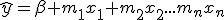

Multiple regression allows us to
- predict the value of the dependent variable from more than one independent variable
- estimate the influence of several independent variables on the outcome
You could for example consider both age and weight as predictors of resting heart rate.
Although it is not as easy to visualise the multiple regression as the simple linear regression, the model is really a simple elaboration. We have the equation

using β to designate the intercept.
Intuitively a result tells us that age contributes so much, weight so much to the outcome - resting heart rate.
It is of course a matter of some skill (and knowledge!) to determine what independents belong in a model, but we have some guidance from the t statistic calculated for each of the slope coefficients. If a coefficient is not - per p(t) - significant we should note that it does not contribute to the model: there is no linear dependence of the dependent on that predictor.
When a predictor is not significant, we may improve the fit by removing it from the model and recalculating. However, we should notice that there is here a critical distinction between the statistical significance and the theoretical relevance: knowing that some variable is not a significant predictor my be very important to ones theoretical understanding of the domain.